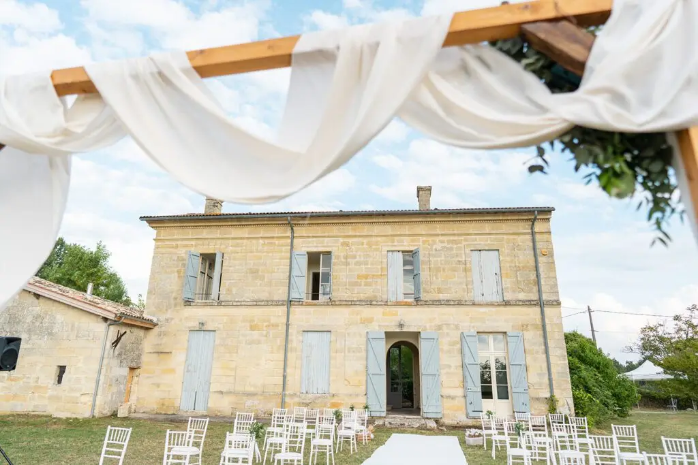
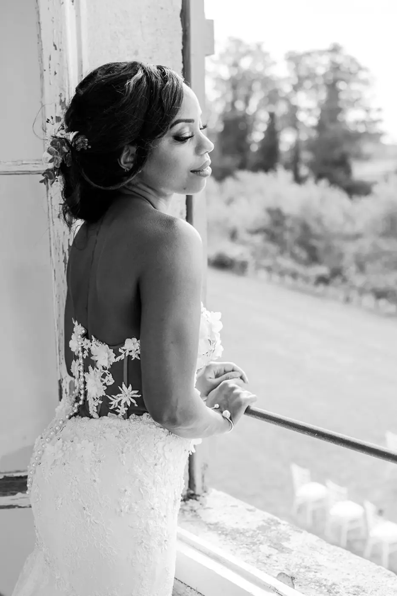
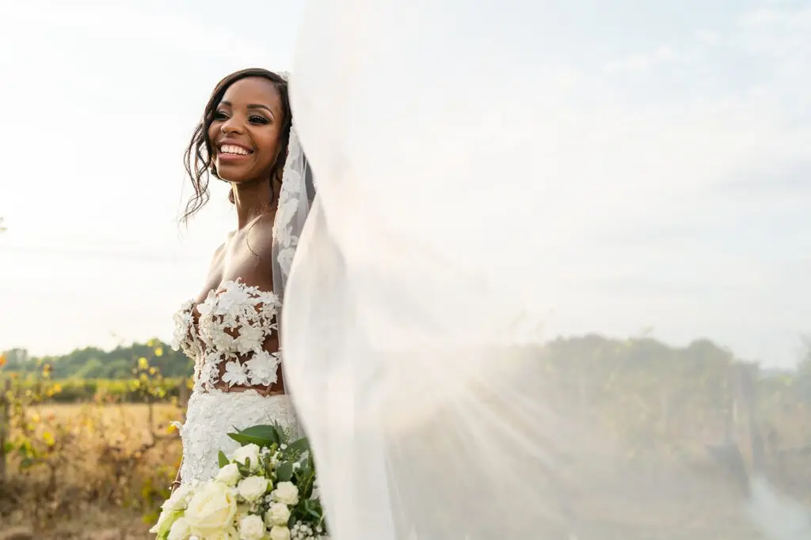

Se marier à Bordeaux
La ville de Bordeaux est connue mondialement pour son patrimoine unique, certains mariés décident de s’unir dans cette ville pour en profiter pleinement le plus beau jour de leur vie. Alors, explorons les pistes à suivre pour un mariage typique bordelais pour les couples étrangers réussi !

Si vous êtes étrangers, sachez qu’il y a différentes conditions à remplir pour pouvoir s’unir civilement en France et donc à Bordeaux, je vous invite donc à consulter le site du ministère de l’ intérieur pour étudier vos options ! Sinon, il est possible de vous marier religieusement, de célébrer votre cérémonie laïque ou d’organiser votre réception de mariage dans cette magnifique région bordelaise. Ne passez pas à côté des merveilles que la ville a à vous offrir le jour de votre mariage !
Ville du vin, des cannelés, traversée par le fleuve de la Gironde, il y a tant de choses à découvrir ! Alors voici quelques idées pour votre mariage typiquement bordelais. Tout d’abord, pour votre lieu de réception à Bordeaux, vous ne pouvez pas éviter les nombreux châteaux et domaines viticoles qui bordent la ville, pour un mariage romantique et royal entouré de vignes. En plein centre, vous trouverez de nombreux espaces pour célébrer votre union dans des bâtisses à l’architecture bordelaise.
Côté gastronomie, pour votre repas de mariage typiquement bordelais, préparez-vous à vous régaler. Car si la ville est célèbre pour son terroir, proche de la mer comme le très prisé Bassin d’Arcachon, vous pourrez également déguster des huîtres ou encore des spécialités à base de canard, venant du Sud-Ouest. Tant de pistes à explorer pour un mariage chic à la bordelaise !

Wedding planner expérimentée à Bordeaux, j’ai organisé de nombreux mariages dans la région et je connais donc toutes les spécificités du secteur. Au fil du temps, j’ai également acquis un répertoire de prestataires de qualité qui seront à même de combler toutes vos envies !
Alors, si vous rêvez d’organiser une mariage typiquement bordelais mais que vous ne connaissez pas bien la région, contactez-moi et nous pourrons en discuter ensemble.








Lovely Day Event c'est plusieurs types de prestations
L'organisation de mariage
Je vais intervenir sur toutes les étapes de vos préparatifs et vous guider dans vos choix. Je suis force de proposition pour que votre mariage ne ressemble qu’à vous.
Décoration de mariage
Créative et passionnée, je suis certifiée Wedding Designer et je conçois une ambiance scénographique qui correspond au thème de votre mariage.
Coordination le jour J
Je serai le chef d’orchestre pour gérer les différents prestataires, la mise en place de votre décoration et le déroulement de cette belle journée.